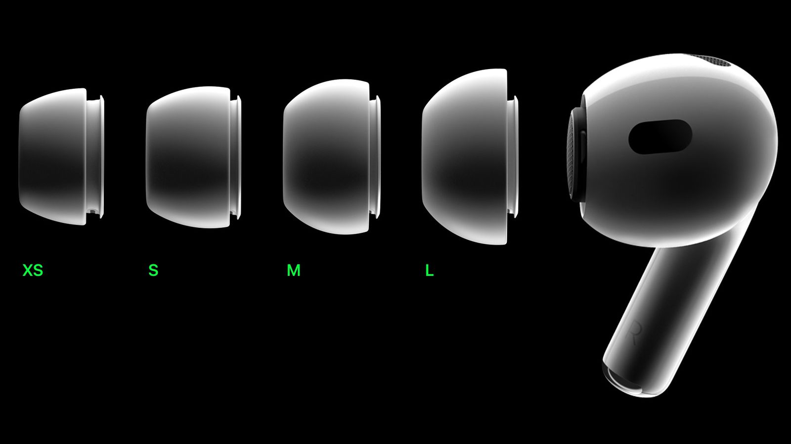

AirPods Pro
(2nd generation)
Up to 2x more Active Noise Cancellation. Transparency mode to hear the world around you. All-new Adaptive Audio intelligently tailors noise control to your environment. Spatial Audio takes immersion to a remarkably personal level. And a single charge delivers 6 hours of battery life.
Audio performance
H2. More
immersive
by every
measure.
The Apple-designed H2 chip is the force behind the advanced audio performance of AirPods Pro, working with the driver and amplifier to create crisp, high-definition sound. It uses computational algorithms to deliver noise cancellation, superior three-dimensional sound and efficient battery life — all at once.

Four pairs of silicone tips are included to fit a wide range of ears. The tips secure AirPods Pro in place and create an acoustic seal that closes in the sound.
Intelligent noise control
Unheard-of
sound.
On every level.
The H2-powered AirPods Pro now feature Adaptive Audio1, automatically prioritising sounds that need your attention as you move through the world. By seamlessly blending Active Noise Cancellation with Transparency mode when you need it, Adaptive Audio magically delivers the right mix of sound for any environment.